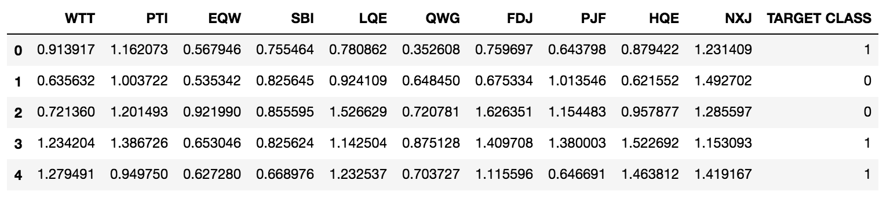

KNN (K-Nearest Neighbor)¶
Tentang apakah KNN (K-Nearest Neighbor) ini ?¶
Siapakah KNN? Algoritme k-nearest neighbor (k-NN atau KNN) adalah sebuah metode untuk melakukan klasifikasi terhadap objek berdasarkan data pembelajaran yang jaraknya paling dekat dengan objek tersebut. Tujuan dari algoritma ini adalah mengklasifikasi objek baru berdasakan atribut dan sampel latih. pengklasifikasian tidak menggunakan model apapun untuk dicocokkan dan hanya berdasarkan pada memori. Diberikan titik uji, akan ditemukan sejumlah K objek (titik training) yang paling dekat dengan titik uji. Klasifikasi menggunakan voting terbanyak di antara klasifikasi dari K objek. Algoritma K-NN menggunakan klasifikasi ketetanggaan sebagai nilai prediksi dari sample uji yang baru. Dekat atau jauhnya tetangga biasanya dihitung berdasarkan jarak Eucledian.
Kelebihan dan Kekurangan KNN¶
KNN ini memiliki kelebihan dan kekurangan, diantaranya ada:
Kelebihan dari Algoritma KNN ini adalah:
- Sederhana untuk diterapkan,
- Pelatihan lebih mudah dan memiliki beberapa parameter.
- dia tangguh terhadap training data yang noisy dan efektif apabila data latih nya besar.
Kekurangan :
- KNN perlu menentukan nilai dari parameter K (jumlah dari tetangga terdekat)
- Pembelajaran berdasarkan jarak tidak jelas mengenai jenis jarak apa yang harus digunakan dan atribut mana yang harus digunakan untuk mendapatkan hasil yang terbaik
- Biaya komputasi cukup tinggi karena diperlukan perhitungan jarak dari tiap sample uji pada keseluruhan sample latih
Apa sajakah yang menggunakan Case?¶
Ada saat-saat di mana data dapat diberikan yang dianonimkan dan tujuannya adalah untuk mencoba mengklasifikasikannya, tanpa benar-benar mengetahui konteks data tersebut. Pikirkan kepribadian pelanggan kelompok untuk merekomendasikan produk tertentu. Beberapa 'kasus penggunaan' ini adalah sebagai berikut:
- Sistem Rekomendasi
- Pencegahan pencurian di bisnis ritel modern
- Mendeteksi pola dalam penggunaan kartu kredit dan banyak lagi
Topik¶
-
Apa itu KNN?*
-
Bagaimana cara kita menggunakannya
1) Impor Library
2) Baca dalam Dataset
3) Menstandarisasi skala untuk persiapan Algoritma KNN*
4) Membagi data menjadi pelatihan dan set tes
5) Buat dan Latih Model
6) Buat prediksi dengan Model
7) Mengevaluasi prediksi*
8) Mengevaluasi nilai-K alternatif untuk prediksi yang lebih baik
9) Tingkat Kesalahan Plot
10) Sesuaikan nilai K per evaluasi tingkat kesalahan
Perhitungan KNN Sederhana¶
Algoritma KNN sangat sederhana. Algoritma ini bekerja berdasarkan jarak minimum dari data baru terhadap K tetangga terdekat yang telah ditetapkan. Setelah diperoleh K tetangga terdekat, prediksi kelas dari data baru akan ditentukan berdasarkan mayoritas K tetangga terdekat.
KNN dapat dibagi menjadi 2 jenis bersadarkan tetangga yang digunakan sebagai acuan perhitungan yaitu :
– 1-NN yaitu pengklasifikasikan dilakukan terhadap 1 data tetangga yang memiliki label terdekat
– k-NN yaitu pengklasifikasikan dilakukan terhadap k data tetangga yang memiliki label terdekat dengan K harus lebih besar 1 dan ganjil
Algoritma KNN:
- Tentukan parameter K = jumlah tetangga terdekat
- hitung jarak antara data baru dengan semua data training
- urutkan jarak tersebut dan tetapkan tetangga terdekat berdasarkan jarak minimum ke-K
- periksa kelas dari tetangga terdekat
- gunakan mayoritas sederhana dari kelas tetangga terdekat sebagai nilai prediksi data baru
Contoh Kasus :¶
Pengenalan untuk menentukan seseorang itu mempunyai hipertensi atau tidak
Tabel Tabel data hipertensi
| Umur | Kegemukan | Hipertensi |
|---|---|---|
| muda | gemuk | Tidak |
| muda | sangat gemuk | Tidak |
| paruh baya | gemuk | Tidak |
| paruh baya | terlalu gemuk | Ya |
| tua | terlalu gemuk | Ya |
Jika data uji sebagai berikut maka termasuk hipertensi atau tidak?
Tabel uji data hipertensi
| Umur | Kegemukan | Hipertensi |
|---|---|---|
| tua | sangat gemuk | ? |
Penyelesaian dengan 1-NN
- Gambarkan dalam bentuk grafik sebagai berikut
**Gambar Hasil grafik dari tabel data hipertensi **
- Hitunglah jarak titik yang diujikan dengan menggunakan Euclidean Distance, dengan asumsi nilai sebagai berikut:
Tabel tabel konversi katagorikal ke interger
| muda | 1 | gemuk | 1 | |
|---|---|---|---|---|
| paruh baya | 2 | sangat gemuk | 2 | |
| tua | 3 | terlalu gemuk | 3 |
- Cari data terdekat
Gambar Data baru masuk didalam kelas hipertensi
- Berilah label data uji sesui dengan label data terdekat
Algoritma k-NN
-
Tentukan k misalkan 3
-
Hitung jarak antara data baru ke setiap data
-
Tentukan k atau 3 data yang memilki label dan mempunyai jarak yang paling dekat
**Gambar Data baru dibandingkan dengan 3 data terdekat **
- Klasifikasikan data baru ke dalam data yang memilili label mayoritas
Gambar Data baru termasuk kedalam kelas hipertensi
Contoh permasalahan 1¶
Diberikan data training berikut dibawah ini, terdiri dari 2 atribut dengan skala kuantitatif yaitu X1 dan X2 serta 2 kelas yaitu baik dan buruk. Jika terdapat data baru dengan nilai X1=3 dan X2=7, tentukan kelasnya
data training: data latih K-NN
| X1 | X2 | Y |
|---|---|---|
| 7 | 7 | Buruk |
| 7 | 4 | Buruk |
| 3 | 4 | Baik |
| 1 | 4 | Baik |
- Tentukan parameter K = jumlah tetangga terdekat
Misalkan ditetapkan K = 3
- Hitung jarak antara data baru dengan semua data training
Tabel Jarak data latih dengan data uji
| X1 | X2 | Kuadrar jarak dengan data baru(3,7) |
|---|---|---|
| 7 | 7 | (7-3)2+(7-7)2=16 |
| 7 | 4 | (7-3)2+(4-7)2=25 |
| 3 | 4 | (3-3)2+(4-7)2=9 |
| 1 | 4 | (1-3)2+(4-7)2=13 |
- Urutkan jarak tersebut dan tetapkan tetangga terdekat berdasarkan jarak minimum ke-K
Tabel Mencari 3 data terdekat
| X1 | X2 | Kuadrar jarak dengan data baru(3,7) | Peringkat Jarak minimum | Termasuk 3 tetangga terdekat |
|---|---|---|---|---|
| 7 | 7 | (7-3)2+(7-7)2=16 | 3 | Ya |
| 7 | 4 | (7-3)2+(4-7)2=25 | 4 | Tidak |
| 3 | 4 | (3-3)2+(4-7)2=9 | 1 | Ya |
| 1 | 4 | (1-3)2+(4-7)2=13 | 2 | Ya |
- Periksa kelas dari tetangga terdekat
Tabel Memberi label berdasarkan label terbanyak dari 3 data terdekat
| X1 | X2 | Kuadrar jarak dengan data baru(3,7) | Peringkat Jarak minimum | Termasuk 3 tetangga terdekat | Y= kelas tetangga terdekat |
|---|---|---|---|---|---|
| 7 | 7 | (7-3)2+(7-7)2=16 | 3 | Ya | Buruk |
| 7 | 4 | (7-3)2+(4-7)2=25 | 4 | Tidak | - |
| 3 | 4 | (3-3)2+(4-7)2=9 | 1 | Ya | Baik |
| 1 | 4 | (1-3)2+(4-7)2=13 | 2 | Ya | Baik |
- gunakan mayoritas sederhana dari kelas tetangga terdekat sebagai nilai prediksi data baru
Hasil pada no 4 menunjukkan bahwa dari 3 tetangga terdekat, terdapat 2 kelas Baik dan 1 kelas Buruk, maka disimpulkan bahwa data baru termasuk ke dalam kelas Baik.
Implementasi¶
Pengaturan¶
Library yang diperlukan¶
- Program saya ini menggunakan Python 3.6 dalam notebook Jupyter dengan dependensi di bawah ini
- Matplotlib 2.1.2
- Numpy 1.14.1
- Panda 0.20.3
- Seaborn 0.7.1
- Scikit Belajar 0.19.1
Langkah - langkah¶
Langkah 1: Impor Library yang diperlukan Mirip dengan diskusi sebelumnya, kita perlu mengimpor pustaka yang memungkinkan untuk analisis data dan visualisasi data agar dapat digunakan untuk dataset. Kami akan menggunakan panda, numpy, matplotlib dan seaborn untuk melakukan ini.
Pustaka Eksplorasi Data
import pandas sebagai pd import numpy sebagai np
Pustaka Visualisasi Data
import matplotlib.pyplot sebagai plt import seaborn sebagai sns % matplotlib inline
import matplotlib.pyplot sebagai plt import seaborn sebagai sns % matplotlib inline
Langkah 2: Baca dalam dataset Kami akan menggunakan metode panda .read_csv () untuk membaca dalam dataset . Kemudian kita akan menggunakan metode .head () untuk mengamati beberapa baris pertama data, untuk memahami informasi dengan lebih baik. Dalam kasus kami, tajuk fitur (kolom) memberi tahu kami cukup sedikit. Ini bagus karena kami hanya berusaha mendapatkan wawasan melalui pengelompokan poin data baru dengan mereferensikan elemen tetangga.
# Gunakan metode panda .read_csv () untuk membaca dalam dataset rahasia # index_col -> argumen memberikan indeks ke kolom tertentu df = pd.read_csv ('Data Rahasia', index_col = 0) # Gunakan metode .head () untuk menampilkan beberapa baris pertama df.head ()

Langkah 3: Membakukan (menormalkan) skala data untuk mempersiapkan algoritma KNN Karena jarak antara pasangan titik memainkan bagian penting dalam klasifikasi, perlu untuk menormalkan data untuk meminimalkan hal ini ( tautan bermanfaat ). Ini akan menghasilkan array nilai. Sekali lagi, KNN tergantung pada jarak antara setiap fitur.
# Impor modul untuk menstandarisasi skala from sklearn.preprocessing import StandardScaler # Buat instance (yaitu objek) dari scaler standar scaler = StandardScaler() # Paskan objek dengan semua data kecuali Kelas Target # gunakan metode .drop () untuk mengumpulkan semua fitur kecuali Kelas Target # axis -> argumen mengacu pada kolom; a 0 akan mewakili baris scaler.fit(df.drop('TARGET CLASS', axis= 1))
Kami harus mendapatkan konfirmasi berikut di bawah ini:
# Gunakan objek scaler untuk melakukan transformasi
scaled_features = scaler.transform(df.drop('TARGET CLASS',axis=-1))
# Tinjau array nilai yang dihasilkan dari proses fitur skala
scaled_features
Di sini kita memiliki dataset dinormalisasi, minus kolom target
Langkah 4: Pisahkan data yang dinormalisasi menjadi pelatihan dan set tes Langkah ini diperlukan untuk mempersiapkan kita untuk pemasangan (yaitu pelatihan) model nanti. Variabel "X" adalah kumpulan semua fitur. Variabel "y" adalah label target yang menentukan klasifikasi berdasarkan 1 atau 0.Tujuan kami adalah untuk mengidentifikasi kategori mana yang harus dimasukkan ke dalam titik data baru.
# Impor modul untuk membagi data from sklearn.model_selection import train_test_split # Atur X dan ys X = df_feat y = df['TARGET CLASS'] # Gunakan metode train_test_split () untuk membagi data menjadi set masing-masing # test_size -> argumen mengacu pada ukuran subset pengujian # random_state -> argumen memastikan jaminan bahwa output dari Run # 1 akan sama dengan output dari Run 2, yaitu pemisahan Anda akan selalu sama X_train, X_test, y_train, y_test = train_test_split (X, y, test_size = 0.3, random_state = 101)
Ini memungkinkan digunakan untuk melatih model kami pada set pelatihan dan mengevaluasi model yang dibangun terhadap set tes untuk mengidentifikasi kesalahan.
Langkah 5: Buat dan Latih Model Di sini kita membuat Obyek KNN dan menggunakan metode .fit () untuk melatih model. Setelah menyelesaikan model, kami harus menerima konfirmasi bahwa pelatihan telah selesai.
Langkah 6: Buat Prediksi Di sini kami meninjau di mana model kami akurat dan di mana elemennya salah diklasifikasi.
# Gunakan metode .predict () untuk membuat prediksi dari subset X_test pred = knn.predict (X_test) # Tinjau prediksi pred
Langkah 6: Buat Prediksi Di sini kami meninjau di mana model kami akurat dan di mana elemennya salah diklasifikasi.
# Gunakan metode .predict () untuk membuat prediksi dari subset X_test pred = knn.predict (X_test) # Tinjau prediksi pred
Confusion Matrix
# Cetak matriks kebingungan cmat = confusion_matrix(y_test, pred) #print (cmat) print ('TP - True Negative {}'.. format (cmat [0,0])) print ('FP - False Positive {}'.. format (cmat [0,1])) print ('FN - Format Negatif {}'. (cmat [1,0])) print ('TP - True Positive {}'. format (cmat [1,1])) cetak ('Tingkat Akurasi: {}'.format(np.divide(np.sum([cmat[0,0],cmat[1,1]]),np.sum(cmat)))) print('Misclassification Rate: {}'.format(np.divide(np.sum([cmat[0,1],cmat[1,0]]),np.sum(cmat))))
Langkah 8: Evaluasi nilai-K alternatif untuk prediksi yang lebih baik Untuk menyederhanakan proses mengevaluasi beberapa kasus nilai-k, kami membuat fungsi untuk menurunkan kesalahan menggunakan rata-rata di mana prediksi kami tidak sama dengan nilai tes.
# Hasilkan fungsi untuk menambahkan tingkat kesalahan KNN dengan berbagai nilai-k # error_rate -> daftar kosong untuk mengumpulkan tingkat kesalahan pada berbagai nilai-k # for loop -> loop melalui nilai k 1 hingga 39 # knn -> membuat instance KNeighborsClassifier dengan berbagai k # knn.fit -> melatih model # pred_i -> melakukan prediksi dari model pada bagian pengujian # error_rate.append -> menambahkan tingkat kesalahan model dengan berbagai nilai-k, menggunakan rata-rata di mana prediksi tidak # sama dengan nilai tes error_rate = [] for i in range(1,40): knn = KNeighborsClassifier(n_neighbors=i) knn.fit(X_train, y_train) pred_i = knn.predict(X_test) error_rate.append(np.mean(pred_i != y_test))
Langkah 9: Tingkat Kesalahan Plot
 # Konfigurasikan dan plot tingkat kesalahan di atas nilai k plt.figure(figsize=(10,4)) plt.plot(range(1,40), error_rate, color='blue', linestyle='dashed', marker='o', markerfacecolor='red', markersize=10) plt.title('Error Rate vs. K-Values') plt.xlabel('K-Values') plt.ylabel('Error Rate')
Di sini kita melihat bahwa tingkat kesalahan terus menurun ketika kita meningkatkan nilai-k. Sebuah gambar menceritakan seribu kata. Atau setidaknya di sini, kita dapat memahami apa nilai k mengarah ke model yang optimal. Nilai-k dari 17 tampaknya memberikan tingkat kesalahan yang layak tanpa terlalu banyak suara, seperti yang kita lihat dengan nilai-k dari 28 dan lebih besar.
10) Sesuaikan nilai K per evaluasi tingkat kesalahan Ini hanya fine tuning model kami untuk meningkatkan akurasi. Kita perlu melatih model kita dengan nilai-k yang baru.
# Latih kembali model menggunakan nilai-k optimal knn = KNeighborsClassifier(n_neighbors=17) knn.fit(X_train, y_train) pred = knn.predict(X_test)
Laporan Klasifikasi -> Ini memberitahu kita model kami adalah 95% akurat ...
# Cetak laporan klasifikasi dan matriks kebingungan print(classification_report(y_test, pred))
Confusion Matrix
 # Cetak matriks kebingungan cmat = confusion_matrix (y_test, pred) #print (cmat) print('TP - True Negative {}'.format(cmat[0,0])) print('FP - False Positive {}'.format(cmat[0,1])) print('FN - False Negative {}'.format(cmat[1,0])) print('TP - True Positive {}'.format(cmat[1,1])) print('Accuracy Rate: {}'.format(np.divide(np.sum([cmat[0,0],cmat[1,1]]),np.sum(cmat)))) print('Misclassification Rate: {}'.format(np.divide(np.sum([cmat[0,1],cmat[1,0]]),np.sum(cmat))))
Tips:
~ Saat ini membaca Naked Statistics oleh Charles Wheelan. Perspektif yang bagus tentang statistik dan bagaimana itu digunakan dalam kehidupan sehari-hari. Jika kamu membenci program sarjanamu karena kamu tahu tujuan, ini buku untuk kamu.
Quote Mudah berbohong dengan statistik, tetapi sulit mengatakan yang sebenarnya tanpa itu. ~ Andrejs Dunkels
Referensi¶
- https://informatikalogi.com Algorithm
- https://rosyid.lecturer.pens.ac.id/ KonsepLearning-naivebayes-knn
- https://www.ketutrare.com/2018/11/algoritma-k-nearest-neighbor-dan-contoh-soal.html